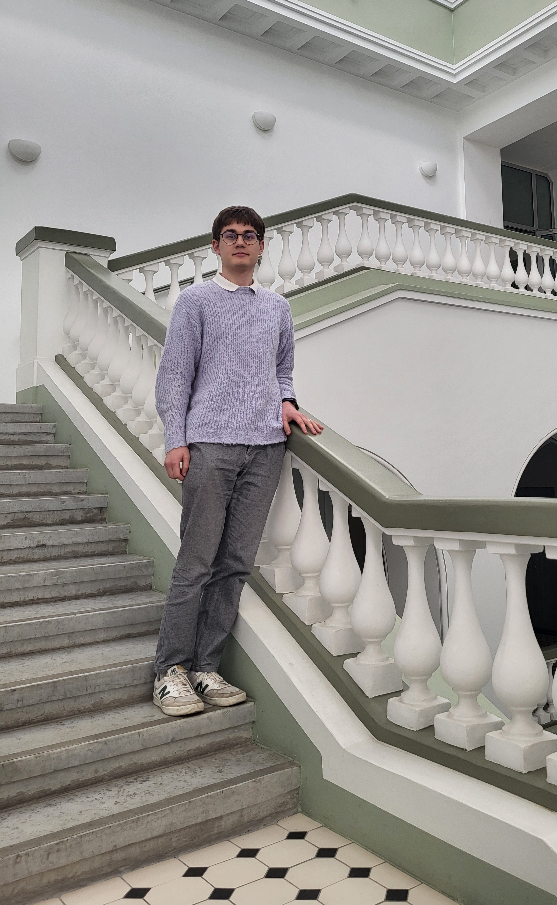

Tallinna Halduskohtu praktika
mai–juuni 2025
2025. aasta kevadel, täpselt enne gümnaasiumi lõpetamist, veetsin töise kuu Tallinna Halduskohtu praktikandina. Kui enne praktika algust pelgasin, missugust sorti tööd mulle üldse teha antakse – lõppude lõpuks olin ju vaid põhiharidusega huviline –, selgus kohe esimesel päeval, et need kartused olid alusetud. Sain kohe hakata tegelema väga sisulise tööga – koostama erinevate kohtunõuete ja -määruste projekte (praktika jooksul tegin nt käiguta jätmise, menetlusse võtmise, tagastamise & menetluse lõpetamise määruste projekte), tutvuda erinevate põnevate asjade toimikutega ja osaleda õige mitmel kohtuistungil. Nii sain esimesed kogemused äärmiselt erinevatest valdkondadest, millega halduskohus tegeleb – alates kodakondsuse küsimustest ja elamislubadest kuni sotsiaalasjadeni ja riigivastutuseni.
Praktika tipphetkeiks kujunesid aga kahtlemata need põnevad päevad, mil sain oma kätt proovida kohtuotsuste projektide kirjutamisega. Esmalt sain pusida rahvusvahelisest kaitsest keeldumise otsuse peale esitatud kaebuse lahendamist. Et selles asjas oli teatud asjaolu mõnevõrra erandlik, oli kogemus selle võrra veelgi huvitavam. Teine asi, mille otsuse projekti koostasin, oli seotud Vabadussõja-järgsete optantide ja nende järeltulijate kodakondsusega. Minu jaoks tegi asja huvitavaks see, et olin just äsja koolieksamiks optantide kohta õppinud ja kogu ajalooline teadmistepagas selle aja kohta tuli kasuks.
Eks näis, kas saan tulevikus Riigi Teatajast mõnest otsusest lugeda ka enda mõtteid ja sõnu (mis on otseloomulikult kohtuniku valvsa pilgu alt läbi käinud), kuid kuldaväärt oli praktika igal juhul. Suur tänu, juhendaja Ruth Prigoda ja kogu Tallinna Halduskohtu kollektiiv, kes te mulle nii ainulaadse võimaluse pakkusite, hästi vastu võtsite ja väärikalt suunasite!
